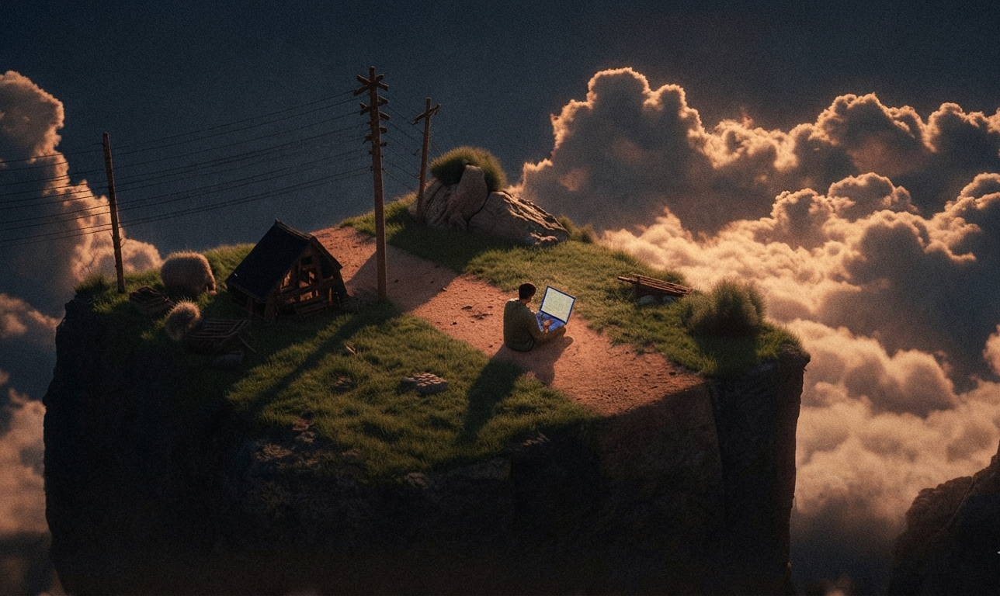

Showcase Gallery

An ongoing archive of interactive studies — built one concept, one build at a time.
Nothing here is a mockup. Every piece in this archive runs in the browser exactly as shown — the discipline is in finishing, not just designing.
Semantic HTML, considered CSS, and vanilla JavaScript first — no framework hides the fundamentals.
Each build tackles one real concept — DOM logic, APIs, audio, state — and ships before moving on.
Old builds stay untouched. The archive is the log, not a highlight reel — progress is visible, not curated away.
Every build in the gallery is playable in the browser — press keys, click pads, run the sequence.
Each project notes the concept it was built to practice, so the archive doubles as a learning log.
New studies join on a rolling basis — the roadmap below is public, not a secret backlog.
Built on fundamentals first — HTML, CSS, and JavaScript — before layering in tools like Node or React.
The sequence matters here — each stage is a prerequisite for the next.
HTML structure, CSS layout, and responsive design — the load-bearing walls before anything else gets added.
CompleteVanilla JavaScript, DOM manipulation, and jQuery — turning static pages into things you can press, drag, and play.
CompleteNode.js, Express, and EJS — fetching real data and rendering it server-side instead of hardcoding content.
In progressSQL, databases, and authentication — giving builds memory and letting people log in safely.
AheadComponent-based frontends, layered onto the fundamentals already in place.
AheadShort reflections logged at each stage, kept as written — not polished after the fact.
The Drum Kit looked trivial until the sounds and animations had to fire in sync. Small builds still hide real problems.
Simon Game was the first time state actually had to be tracked across rounds, not just reacted to once.
Moving from static pages to Express and EJS changed how every future build gets planned — data first, markup second.